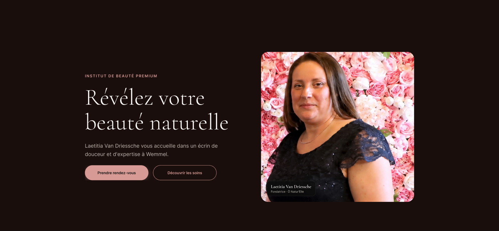
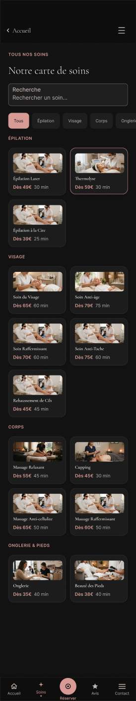

Ô Natur'Elle — een volledig prototype voor een schoonheidsinstituut
Ô Natur'Elle is een premium schoonheidsinstituut, opgericht door Laetitia Van Driessche, gediplomeerde schoonheidsspecialiste in Wemmel. Voor dit klantproject ontwierp ik van A tot Z een volledig, responsief Figma-prototype — met één eenvoudige rode draad: een twijfelende klant helpen de juiste behandeling te vinden en zonder moeite te boeken.


Homepage, mobiel en desktop — dezelfde boodschap, met een informatiedichtheid aangepast aan elk scherm.
De aanpak
Vijf stappen, van eerste schets tot klikbaar prototype
Afbakening
Een premium en warme positionering, mobile-first gedacht: de meeste klanten van een schoonheidsinstituut boeken via hun smartphone, tussen twee afspraken door. De structuur van de site vertrekt van die vaststelling, niet omgekeerd.
De schoonheidsdiagnose
De kernfunctie van het project: een vragenlijst in 4 stappen (te behandelen zone, beschikbaarheid, budget) die automatisch de meest geschikte behandeling aanraadt. Het doel is twijfel te verminderen — vaak de echte reden waarom een bezoekster zo'n site verlaat zonder te boeken.

Resultaat van de diagnose: een duidelijke aanbeveling, onderbouwd door de antwoorden van de klant.
Het boeken
Een flow in 3 stappen met een voortgangsindicator die altijd zichtbaar is, een laadscherm tijdens de controle van het tijdslot en daarna een geanimeerde bevestiging (vinkje + confetti) — om van een afspraak maken een aangenaam moment te maken in plaats van een administratief formulier.

Stap 1 van 3: elke stap toont de voortgang, nooit een eindeloos formulier in één keer.
Catalogus & webshop
Twaalf behandelingen per categorie (ontharing, gezicht, lichaam, nagels), elk met prijs en duur al zichtbaar op de miniatuur, met zoekfunctie en filters. Daarnaast een webshop met vijf producten en quick view, en een galerij met fotoviewer.

De volledige behandelingenlijst — zoeken, filteren per categorie, prijs en duur meteen zichtbaar.
Desktopversie
De volledige flow werd opnieuw ontworpen voor grote schermen in plaats van gewoon vergroot: een lay-out in twee kolommen op de homepage, foutmeldingen in het contactformulier, en juridische pagina's (wettelijke vermeldingen, privacybeleid) en een 404-pagina, voor een echt volledig prototype.
Visueel ontwerp
Van wireframe tot definitieve interface
Het visuele proces van het project: low-fidelity wireframes, high-fidelity mock-ups en design system.
Low-fidelity wireframes om de structuur van Ô Natur'Elle te valideren voordat er in visuele details geïnvesteerd werd.
High-fidelity mock-ups met microcopy, merkkleuren en de definitieve typografische hiërarchie.
Titel — Fraunces 600
Accent — Fraunces italic
Lopende tekst — Hanken Grotesk, 16px, line-height 1.6
ANNOTATIONS — IBM Plex Mono
Uittreksel uit het design system van Ô Natur'Elle: kleurenpalet, typografische schaal en componenten, gedocumenteerd in Figma.
User Research
Begrijpen vóór ontwerpen
Voor de eerste mock-ups ontworpen werden, was het nodig de echte verwachtingen van de toekomstige gebruiksters te begrijpen — om geen oplossing te bouwen op aannames in plaats van op concrete gegevens. Een vragenlijst werd verspreid onder 24 personen uit de potentiële doelgroep van Ô Natur'Elle.
Op het eerste gezicht lijkt de telefoon het belangrijkste kanaal. Maar een nauwkeurigere analyse toont dat hij vooral een gebrek aan online informatie compenseert: als prijzen ontbreken of er geen foto's zijn, belt de klant om de antwoorden te krijgen die ze mist.
Drie op de vier deelneemsters tonen interesse in hulp bij het kiezen van een behandeling — dat gegeven verantwoordde rechtstreeks de ontwikkeling van de persoonlijke diagnose in het project.
Profiel
Vertegenwoordigt de meerderheid van de respondentes jonger dan 35. Gebruikt dagelijks veel digitale diensten en doet de meeste reservaties rechtstreeks via haar smartphone. Ze verwacht dezelfde eenvoud wanneer ze een schoonheidsbehandeling boekt.
Doelen
- Snel boeken
- Behandelingen makkelijk vergelijken
- Prijzen meteen zien
Frustraties
- Verborgen prijzen
- Te lange formulieren
- Verplicht bellen
Impact op het ontwerp
Boeken in drie stappen, mobile first, prijzen meteen zichtbaar, boekingsknop goed in het oog.
Profiel
Vertegenwoordigt de respondentes ouder dan 35. Gebruikt digitale tools maar houdt vast aan meer traditionele gewoontes; is voorzichtiger bij een nieuwe zaak. Haar gedrag wordt sterk bepaald door vertrouwen.
Doelen
- Gerustgesteld worden vóór het boeken
- Echte foto's zien
- Betrouwbare info krijgen
Frustraties
- Geen foto's
- Verplicht vooraf betalen
- Weinig professionele sites
Impact op het ontwerp
Galerij voor/na, foto's van het instituut, klantenreviews, geen online betaling, voorstelling van Laetitia.
Denkt
- Ik wil tijd winnen.
Voelt
- Ongeduld, frustratie als het traag gaat.
Ziet
- Interfaces die geoptimaliseerd zijn voor mobiel.
Zegt
- "Ik doe graag alles via mijn telefoon."
Doet
- Boekt rechtstreeks online.
Pijnpunten
- Verplicht bellen, verborgen prijzen.
Testprotocol voor Ô Natur'Elle
- Doel: nagaan of een twijfelende klant via de schoonheidsdiagnose zonder blokkering tot een bevestigde boeking komt.
- Deelnemers: 5 personen, waaronder vaste klanten van schoonheidsinstituten.
- Methode: gemodereerde test op afstand met het Figma-prototype, hardop denken, flow diagnose → boeking.
- Metingen: voltooiingsgraad, tijd per stap, ervaren duidelijkheid van de aanbeveling.
- Rapportering: geprioriteerde lijst van ergernissen, vóór de ontwikkeling start.
De ervaring structureren
User flow & informatiearchitectuur
De analyse van de vragenlijst bracht twee soorten gedrag aan het licht: sommige klanten weten meteen welke behandeling ze willen, andere twijfelen en hebben begeleiding nodig. Daarom werden twee flows ontworpen die naar dezelfde boeking leiden.
Wanneer een gebruikster de diagnose afrondt, gaat ze meteen naar stap 2 van de boeking (datum en uur) zonder de behandeling opnieuw te moeten kiezen — de diagnose heeft die stap al voor haar gedaan.
Waarom deze structuur? Twee wegen leiden naar de boeking: een directe voor klanten die al weten welke behandeling ze willen, en een begeleide via de Diagnose voor wie twijfelt — volgens de vragenlijst het meest voorkomende geval.
De Simulator blijft op de homepage in plaats van op een aparte pagina: het is een ontdekkingstool, geen stap in de boekingsflow. Producten, Galerij en Contact blijven bereikbaar via de hoofdnavigatie, zonder de boekingsflow ooit te onderbreken.
Interactieontwerp
Micro-interacties die feedback geven
Elke interactie moet onmiddellijk en begrijpelijk reageren op een handeling van de gebruiker. Hier zijn enkele principes uit dit project, die u hieronder kunt uitproberen.
Knopfeedback
Onmiddellijke visuele feedback om te bevestigen dat een actie geregistreerd is.
Formulierveld
Validatie in real time met een duidelijke, constructieve foutmelding.
Vul een geldig adres in om de live validatie te zien.
Toegankelijke schakelaar
Toggle-component met zichtbare status, duidelijk label en volledige toetsenbordondersteuning.
Voortgangsindicator
Een voortgangsbalk om de gebruiker gerust te stellen tijdens het wachten.
Klaar om te starten.
En verder
Volgende stap: testen met echte klanten
Het prototype is volledig maar nog niet in reële omstandigheden getest. De volgende stap is de flow diagnose → boeking te laten testen door 5 vaste klanten van schoonheidsinstituten, vóór het project naar de ontwikkeling gaat.